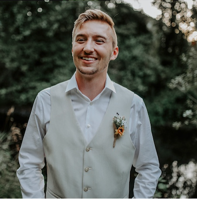
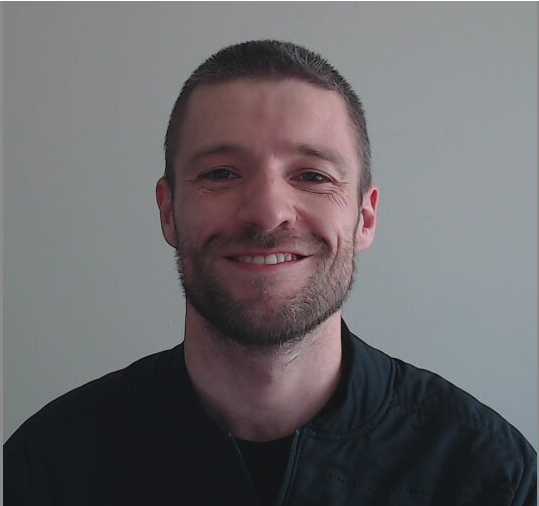
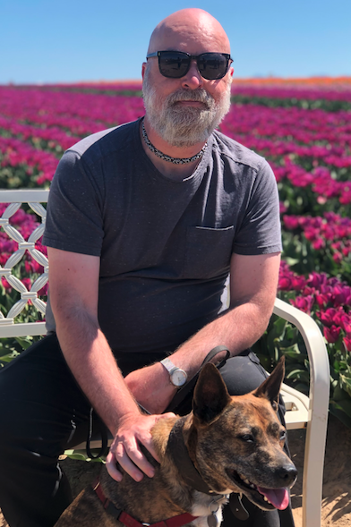

Tanner
Outdoor enthusiast, space connoisseur. My passion for the outdoors fuels my need to learn more about our solar system and all the mysteries behind the lens. As a software engineer, my goal is to inform others about the complexities of space, in a fun, and educative way.
Paul
Software developer interested in the potential for technology to work with and augment human intelligence rather than replace it. My favorite sport is mountain running and my favorite food is hashbrowns.
Greg
Dog lover, highly caffeinated eater of steaks and all the bad things. Sometimes I watch the stars for aliens.